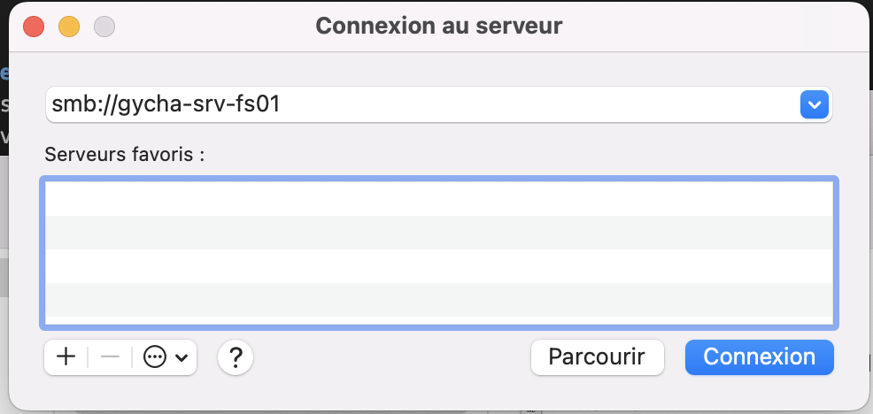
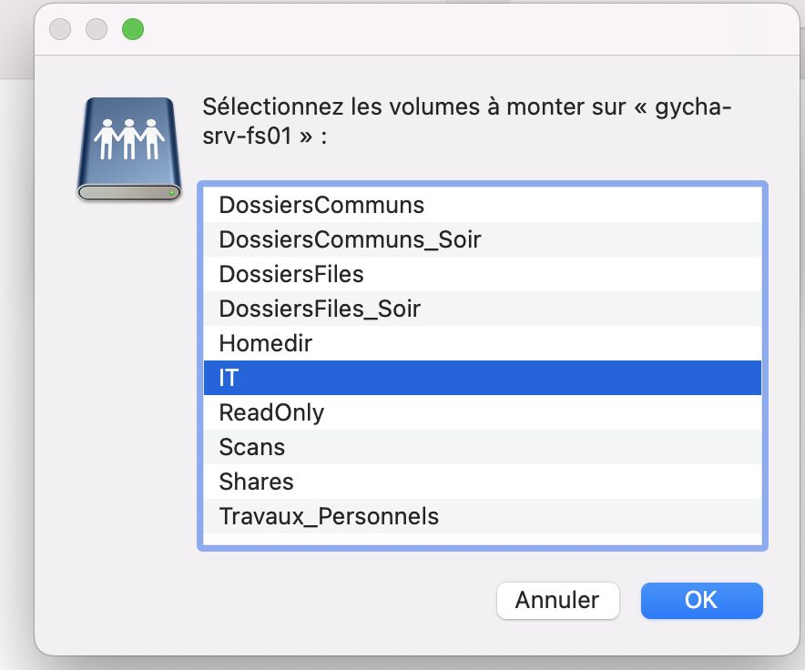
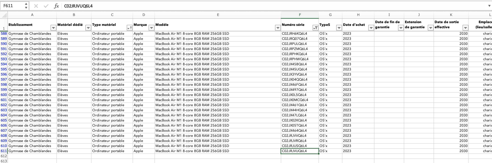
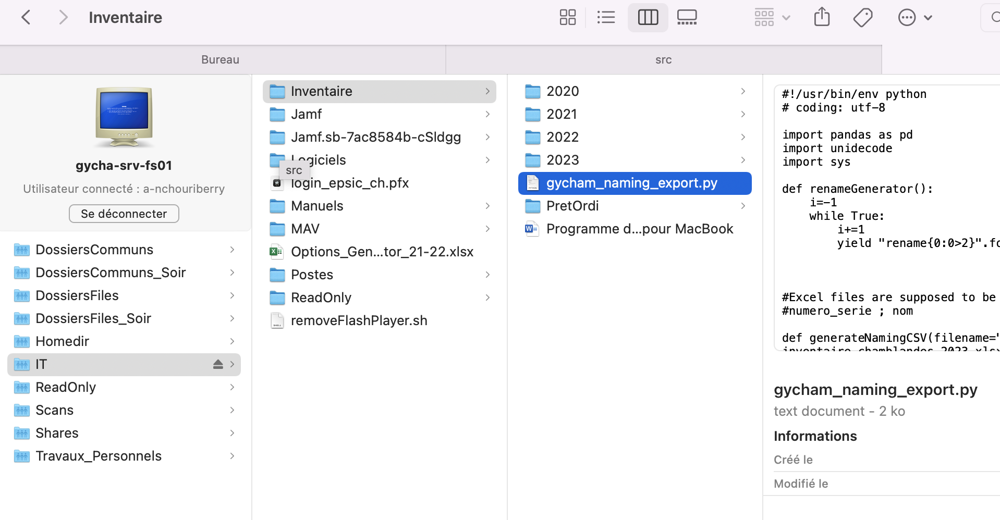
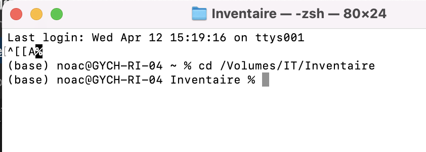

Se connecter au serveur de l’inventaire
Contents
Se connecter au serveur de l’inventaire#
Pour voir les fichiers d’inventaire et le script qui nous sera utile, il faut d’abord qu’on se connecte au serveur d’inventaire:
Il faut ouvrir Finder et faire CMD + K à l’intérieur: Vous verrez une fenetre comme ça:
{kind=link}
voici l’adresse du serveur a mettre:
smb://gycha-srv-fs01
Quand la connexion sera faite, il y aura une fenêtre avec des dossiers à sélectionner. Pour notre part nous allons prendre le dossier IT qui contient les fichiers inventaire:
{kind=link}
Ou trouver le(s) fichier d’inventaire ?#
Dans le finder, on va aller dans inventaire > 2023 (l’année) > et le fichier se trouve ici. Si vous voulez créer un nouveau fichier d’inventaire pour une nouvelle année, il faut créer un dossier avec l’année et copier le dernier fichier inventaire à jour.
Comment ajouter quelque chose à l’intérieur#
En ouvrant le fichier, on se retrouve avec tout ce qui sert à identifier les ordinateurs du gymnase. le type de matériel, la marque, le numéro de serie, le nom… Pour ajouter du matériel à l’inventaire, il suffit de rajouter une ligne en respectant la mise en forme des autres lignes de l’inventaire et de la modifier par rapport à vos besoins.
{kind=link}
Dés que c’est fait, il faut sauvegarder les modifications et se rendre dans le dossier Inventaire, puis modifier le fichier .py pour modifier toutes les dates (2024 au lieu de 2023 par ex) si besoin.
{kind=link}
Ensuite il faut ouvrir un terminal, taper “cd “, prendre le dossier inventaire et le glisser dans le terminal pour pouvoir s’y rendre.
Après, il faut appuyer sur entrer et après taper cette commande:
python gycham_naming_export.py
ça permettera au script python de s’exécuter et de mettre a jour l’inventaire.
{kind=link}
Que faire si le(s) appareils ne prennent pas le bon nom?#
Généralement, quand l’enrôlement/le renommage ne se fait pas correctement, c’est à cause d’un problème de connexion internet. Soyez sûr que l’appareil soit bien branché en ethernet avant de passer à la suite. Dés que c’est fait, il faut ouvrir un terminal sur la machine et taper la commande suivante:
sudo jamf policy -event renamecomputerout
Normalement ça devrait mettre un message “Set computer name to xxxxxxxxxx” ou un message qui y ressemble. Si vous ouvrez un nouveau terminal, vous devriez voir quelque chose d’autre que GYCH_(null). (ce que vous avez mis dans le fichier inventaire). Vous pouvez aussi aller dans la barre de recherche et chercher Partages pour contrôler le nom du poste.